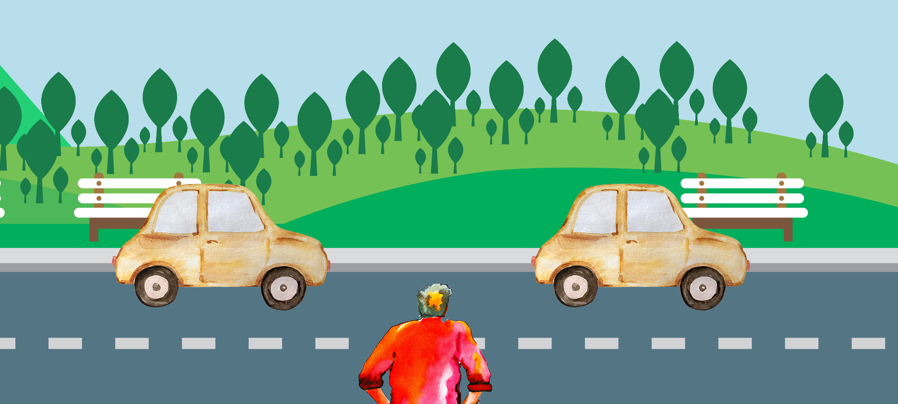
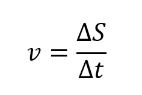
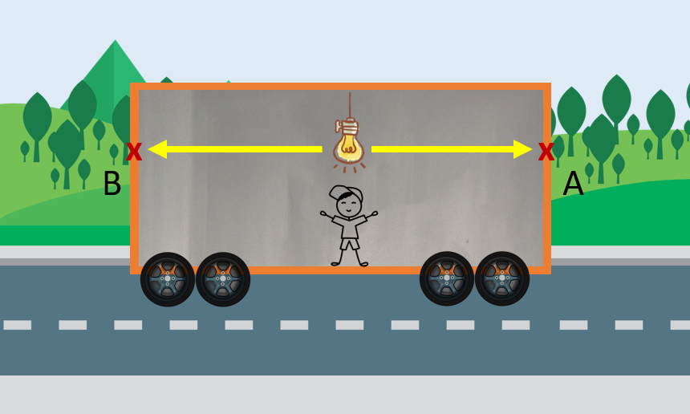
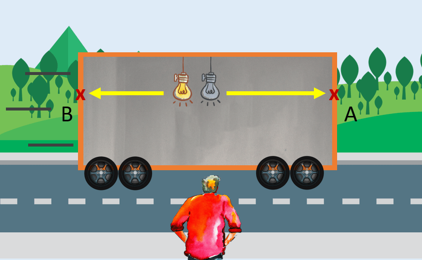
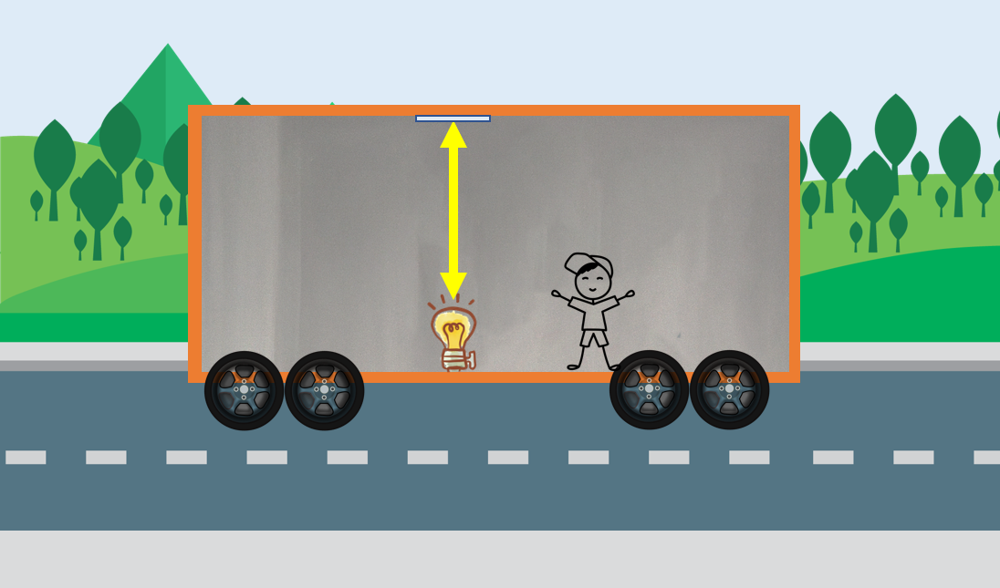
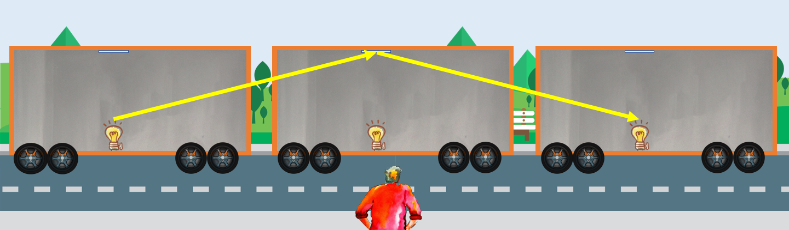
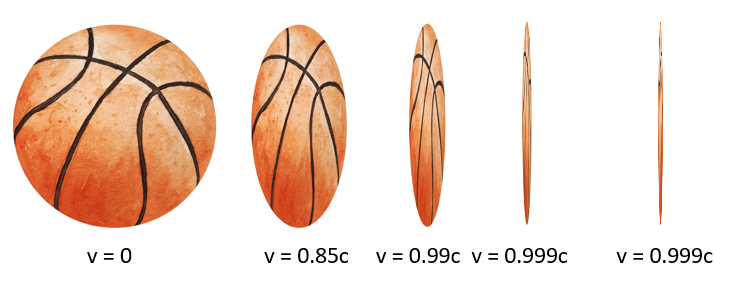
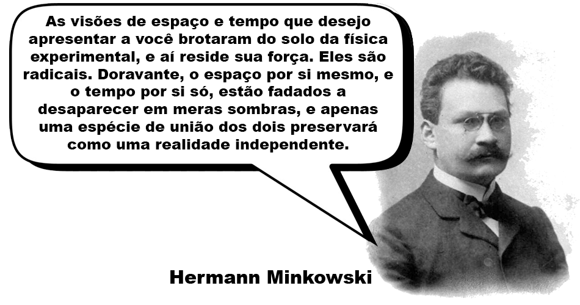

Origens
A ideia newtoniana que vimos anteriormente de que o espaço e o tempo eram absolutos foi desafiada em 1905 pela Teoria da Relatividade Restrita, que surgiu de um conflito entre duas verdades físicas:

A ideia newtoniana que vimos anteriormente de que o espaço e o tempo eram absolutos foi desafiada em 1905 pela Teoria da Relatividade Restrita, que surgiu de um conflito entre duas verdades físicas:
Como sabemos, pela perspectiva newtoniana, a velocidade depende do referencial em que nos encontramos: Na figura abaxio, por exemplo, ambos os carros se movem com a mesma velocidade constante entre si, por conta disso, no referencial dos carros, a velocidade relativa entre eles é zero. Já para o observador na beira da estrada, os dois carros estão se movendo com uma certa velocidade em relação a ele.
|
O caso visto acima, no entanto, não se aplica a luz! Diversos experimentos realizados no final do século XIX mostraram que independentemente do referencial observado, a velocidade da luz sempre se mantinha a mesma! |
A inconsistência entre esses dois fatos foi resolvida por Eintein: Ele postulou que a velocidade da luz realmente era igual para todos os referênciais, enquanto que, o que entendiamos sobre velocidades relativas só se aplicava a objetos a uma velocidade muito menor do que a da luz.
A universalidade da velocidade da luz em todos os referenciais, no entando, nos traz consequências interessantes. Se a velocidade, como sabemos, é a razão entre a distância percorrida através do espaço e o correspondente intervalo de tempo:
Então, para mantermos a velocidade da luz a mesma para qualquer referencial, é preciso que espaço e tempo não sejam mais absolutos, mas sim relativos!
Essa descoberta nos traz três consequências importantes:
Podemos dizer que dois eventos são simultâneos se eles ocorrem no mesmo instante de tempo. Como no exemplo abaixo, em que há uma fonte de luz bem no meio do compartimento de um trêm, que está se movendo com uma velocidade constante. Quando a fonte é ligada, a luz se espalha em todas as direções com rapidez igual a c. Como ela se encontra equidistante das extremidades frontal e traseira do compartimento, um observador que esteja dentro dele constata que a luz alcança a extremidade frontal no mesmo instante em que chega na extremidade oposta. Os eventos definidos pela chegada da luz a cada uma das extremidades opostas (A e B) ocorrem simultaneamente para esse observador no interior da nave espacial.
Já para um observador fora do trêm, esses mesmos eventos (A e B) não são simultâneos. Quando a luz se propaga a partir da fonte, ele vê a nave mover-se para frente, de modo que a traseira do compartimento se move em direção ao feixe luminoso, enquanto a frente se move em sentido oposto. O feixe direcionado para trás do compartimento, portanto, tem uma distância mais curta a percorrer do que o feixe que segue para frente. Uma vez que os valores das velocidades da luz em ambos os sentidos são os mesmos, o observador externo vê o evento da luz chegando à traseira acontecer antes do evento em que a luz chega à frente do compartimento.
Portanto, podemos concluir que:
Imagine uma fonte luz instalada no chão desse mesmo vagão de trêm, onde no teto acima dela foi instalado um espelho. Ao ligarmos a fonte e emitirmos um flash de luz, veremos de dentro do trêm o flash indo para cima e depois refletindo para baixo da mesma forma que ele faria se a nave estivesse em repouso:
Se observarmos o mesmo evento no lado de fora do compartimento, no entando, observaremos outra coisa. Devido ao flash estar se movendo horizontalmente ao mesmo tempo em que ele se move verticalmente entre o chão e o espelho, vemos o flash seguir um caminho diagonal:
Podemos observar que no segundo caso a luz percorre um caminho maior do que no primeiro. Como a velocidade de propagação da luz é a mesma em todos os sistemas de referência, o flash deve viajar entre o chão e o espelho por um tempo correspondentemente mais longo no segundo caso do que no primeiro. Isso segue da definição de velocidade, que é distância dividida pelo tempo. A distância maior ao longo da diagonal deve ser dividida por um intervalo de tempo correspondentemente maior para resultar num valor invariante para a rapidez da luz. Esse alongamento do tempo é chamado de dilatação temporal.
A partir disso, podemos concluir que:
Porém, apesar de termos descoberto como funciona a dilatação temporal da Relatividade Restrita, essa ainda não explica o que acontece no filme Interestelar, já que ela não tem nenhuma relação com a gravidade! Teremos, então, que continuar investigando...
Assim como o tempo se dilata em altas velocidades, o espaço se contrai sob as mesmas condições, fazendo com que os objetos pareçam mais curtos quando estão se movendo em relação a nós com velocidades relativísticas (próximas à velocidade da luz):
A simulação abaixo mostra como seria atravessar a torre Eiffel em diferentes velocidades relativísticas. Repare que quanto mais próximo chegamos a velocidade da luz, mais o espaço se deforma!
Como podemos ver, então, o espaço e o tempo não são absolutos, muito menos entidades separadas e sem relação entre si. O primeiro a propor isso foi o matemático Hermann Minkowski, que sugeriu que vivemos em uma realidade em que espaço e tempo se misturam:
E de fato, espaço e tempo se unem para o formar o Espaço-Tempo em que vivemos. O que, se pararmos para pensar com calma, faz bastante sentido: O espaço em que vivemos é tridimensional, ou seja, podemos especificar a posição de qualquer local no espaço com três dimensões (sendo elas geralmente comprimento, profundidade e altura), porém, se quisermos marcar um encontro, não basta combinarmos somente o local em que vamos nos ver. É preciso também combinarmos um horário (um tempo), que é a quarta dimensão do Espaço-Tempo em que vivemos!